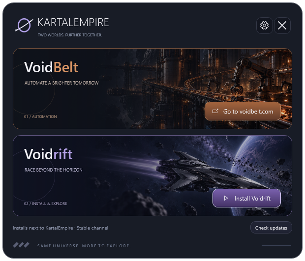

Vos jeux, réunis.
Installez Voidrift en un clic et retrouvez VoidBelt, depuis la même interface.
DEUX MONDES. UN MÊME HORIZON.
VoidBelt, Voidrift et vos prochaines aventures. Un espace discret dans votre barre système, toujours prêt à vous emmener plus loin.
Télécharger KartalEmpire WindowsWindows 10 / 11 · 64 bits · Gratuit
SHA-256
Exécutable non signé : au premier lancement, Windows peut afficher SmartScreen. Choisissez Informations complémentaires, puis Exécuter quand même.
UNE PETITE FENÊTRE SUR VOS MONDES

Votre prochain voyage commence ici.
Installez Voidrift en un clic et retrouvez VoidBelt, depuis la même interface.
KartalEmpire se met à jour automatiquement à l’ouverture. Vous retrouvez ensuite votre espace, sans installation manuelle.
Vos préférences restent en place. Le launcher se fait discret, juste à côté de l’horloge Windows.
PREMIER DÉMARRAGE
Téléchargez et ouvrez KartalEmpire.exe.
Gardez-le dans votre dossier KartalEmpire.
Cliquez sur Install Voidrift, puis laissez votre aventure commencer.